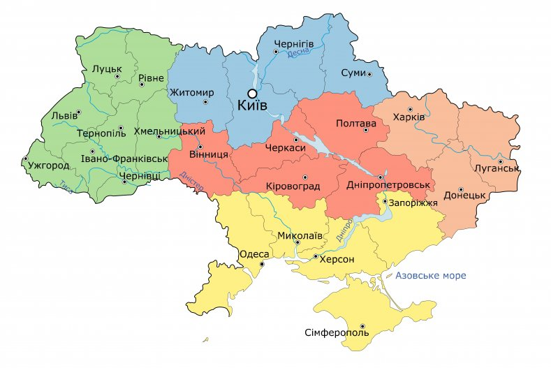

<!-- Image Map Generated by http://www.image-map.net/ -->


<map name="image-map">
    <area target="_blank" alt="Киевская область" title="Киевская область" href="https://ru.wikipedia.org/wiki/%D0%9A%D0%B8%D0%B5%D0%B2%D1%81%D0%BA%D0%B0%D1%8F_%D0%BE%D0%B1%D0%BB%D0%B0%D1%81%D1%82%D1%8C" coords="361,116,35" shape="circle">
    <area target="_blank" alt="Одесская область" title="Одесская область" href="https://ru.wikipedia.org/wiki/%D0%9E%D0%B4%D0%B5%D1%81%D1%81%D0%BA%D0%B0%D1%8F_%D0%BE%D0%B1%D0%BB%D0%B0%D1%81%D1%82%D1%8C" coords="347,339,65" shape="circle">
    <area target="_blank" alt="Днепропетровская область" title="Днепропетровская область" href="https://ru.wikipedia.org/wiki/%D0%94%D0%BD%D0%B5%D0%BF%D1%80%D0%BE%D0%BF%D0%B5%D1%82%D1%80%D0%BE%D0%B2%D1%81%D0%BA%D0%B0%D1%8F_%D0%BE%D0%B1%D0%BB%D0%B0%D1%81%D1%82%D1%8C" coords="542,229,33" shape="circle">
    <area target="_blank" alt="Черниговская область" title="Черниговская область" href="https://ru.wikipedia.org/wiki/%D0%A7%D0%B5%D1%80%D0%BD%D0%B8%D0%B3%D0%BE%D0%B2%D1%81%D0%BA%D0%B0%D1%8F_%D0%BE%D0%B1%D0%BB%D0%B0%D1%81%D1%82%D1%8C" coords="416,58,26" shape="circle">
    <area target="_blank" alt="Харьковская область" title="Харьковская область" href="https://ru.wikipedia.org/wiki/%D0%A5%D0%B0%D1%80%D1%8C%D0%BA%D0%BE%D0%B2%D1%81%D0%BA%D0%B0%D1%8F_%D0%BE%D0%B1%D0%BB%D0%B0%D1%81%D1%82%D1%8C" coords="589,148,38" shape="circle">
    <area target="_blank" alt="Житомирская область" title="Житомирская область" href="https://ru.wikipedia.org/wiki/%D0%96%D0%B8%D1%82%D0%BE%D0%BC%D0%B8%D1%80%D1%81%D0%BA%D0%B0%D1%8F_%D0%BE%D0%B1%D0%BB%D0%B0%D1%81%D1%82%D1%8C" coords="283,104,45" shape="circle">
    <area target="_blank" alt="Полтавская область" title="Полтавская область" href="https://ru.wikipedia.org/wiki/%D0%9F%D0%BE%D0%BB%D1%82%D0%B0%D0%B2%D1%81%D0%BA%D0%B0%D1%8F_%D0%BE%D0%B1%D0%BB%D0%B0%D1%81%D1%82%D1%8C" coords="484,154,35" shape="circle">
    <area target="_blank" alt="Херсонская область" title="Херсонская область" href="https://ru.wikipedia.org/wiki/%D0%A5%D0%B5%D1%80%D1%81%D0%BE%D0%BD%D1%81%D0%BA%D0%B0%D1%8F_%D0%BE%D0%B1%D0%BB%D0%B0%D1%81%D1%82%D1%8C" coords="470,372,24" shape="circle">
    <area target="_blank" alt="Запорожская область" title="Запорожская область" href="https://ru.wikipedia.org/wiki/%D0%97%D0%B0%D0%BF%D0%BE%D1%80%D0%BE%D0%B6%D1%81%D0%BA%D0%B0%D1%8F_%D0%BE%D0%B1%D0%BB%D0%B0%D1%81%D1%82%D1%8C" coords="571,297,47" shape="circle">
    <area target="_blank" alt="Луганская область" title="Луганская область" href="https://ru.wikipedia.org/wiki/%D0%9B%D1%83%D0%B3%D0%B0%D0%BD%D1%81%D0%BA%D0%B0%D1%8F_%D0%BE%D0%B1%D0%BB%D0%B0%D1%81%D1%82%D1%8C" coords="703,197,45" shape="circle">
    <area target="_blank" alt="Донецкая область" title="Донецкая область" href="https://ru.wikipedia.org/wiki/%D0%94%D0%BE%D0%BD%D0%B5%D1%86%D0%BA%D0%B0%D1%8F_%D0%BE%D0%B1%D0%BB%D0%B0%D1%81%D1%82%D1%8C" coords="650,259,33" shape="circle">
    <area target="_blank" alt="Винницкая область" title="Винницкая область" href="https://ru.wikipedia.org/wiki/%D0%92%D0%B8%D0%BD%D0%BD%D0%B8%D1%86%D0%BA%D0%B0%D1%8F_%D0%BE%D0%B1%D0%BB%D0%B0%D1%81%D1%82%D1%8C" coords="284,205,32" shape="circle">
    <area target="_blank" alt="Автономная Республика Крым" title="Автономная Республика Крым" href="https://ru.wikipedia.org/wiki/%D0%90%D0%B2%D1%82%D0%BE%D0%BD%D0%BE%D0%BC%D0%BD%D0%B0%D1%8F_%D0%A0%D0%B5%D1%81%D0%BF%D1%83%D0%B1%D0%BB%D0%B8%D0%BA%D0%B0_%D0%9A%D1%80%D1%8B%D0%BC" coords="500,407,78" shape="circle">
    <area target="_blank" alt="Кировоградская область" title="Кировоградская область" href="https://ru.wikipedia.org/wiki/%D0%9A%D0%B8%D1%80%D0%BE%D0%B2%D0%BE%D0%B3%D1%80%D0%B0%D0%B4%D1%81%D0%BA%D0%B0%D1%8F_%D0%BE%D0%B1%D0%BB%D0%B0%D1%81%D1%82%D1%8C" coords="449,257,28" shape="circle">
    <area target="_blank" alt="Николаевская область" title="Николаевская область" href="https://ru.wikipedia.org/wiki/%D0%9D%D0%B8%D0%BA%D0%BE%D0%BB%D0%B0%D0%B5%D0%B2%D1%81%D0%BA%D0%B0%D1%8F_%D0%BE%D0%B1%D0%BB%D0%B0%D1%81%D1%82%D1%8C" coords="420,351,35" shape="circle">
    <area target="_blank" alt="Сумская область" title="Сумская область" href="https://ru.wikipedia.org/wiki/%D0%A1%D1%83%D0%BC%D1%81%D0%BA%D0%B0%D1%8F_%D0%BE%D0%B1%D0%BB%D0%B0%D1%81%D1%82%D1%8C" coords="528,105,39" shape="circle">
    <area target="_blank" alt="Львовская область" title="Львовская область" href="https://ru.wikipedia.org/wiki/%D0%9B%D1%8C%D0%B2%D0%BE%D0%B2%D1%81%D0%BA%D0%B0%D1%8F_%D0%BE%D0%B1%D0%BB%D0%B0%D1%81%D1%82%D1%8C" coords="100,147,37" shape="circle">
    <area target="_blank" alt="Черкасская область" title="Черкасская область" href="https://ru.wikipedia.org/wiki/%D0%A7%D0%B5%D1%80%D0%BA%D0%B0%D1%81%D1%81%D0%BA%D0%B0%D1%8F_%D0%BE%D0%B1%D0%BB%D0%B0%D1%81%D1%82%D1%8C" coords="409,198,28" shape="circle">
    <area target="_blank" alt="Хмельницкая область" title="Хмельницкая область" href="https://ru.wikipedia.org/wiki/%D0%A5%D0%BC%D0%B5%D0%BB%D1%8C%D0%BD%D0%B8%D1%86%D0%BA%D0%B0%D1%8F_%D0%BE%D0%B1%D0%BB%D0%B0%D1%81%D1%82%D1%8C" coords="228,172,35" shape="circle">
    <area target="_blank" alt="Ровненская область" title="Ровненская область" href="https://ru.wikipedia.org/wiki/%D0%A0%D0%BE%D0%B2%D0%BD%D0%B5%D0%BD%D1%81%D0%BA%D0%B0%D1%8F_%D0%BE%D0%B1%D0%BB%D0%B0%D1%81%D1%82%D1%8C" coords="204,124,28" shape="circle">
    <area target="_blank" alt="Ивано-Франковская область" title="Ивано-Франковская область" href="https://ru.wikipedia.org/wiki/%D0%98%D0%B2%D0%B0%D0%BD%D0%BE-%D0%A4%D1%80%D0%B0%D0%BD%D0%BA%D0%BE%D0%B2%D1%81%D0%BA%D0%B0%D1%8F_%D0%BE%D0%B1%D0%BB%D0%B0%D1%81%D1%82%D1%8C" coords="133,207,20" shape="circle">
    <area target="_blank" alt="Тернопольская область" title="Тернопольская область" href="https://ru.wikipedia.org/wiki/%D0%A2%D0%B5%D1%80%D0%BD%D0%BE%D0%BF%D0%BE%D0%BB%D1%8C%D1%81%D0%BA%D0%B0%D1%8F_%D0%BE%D0%B1%D0%BB%D0%B0%D1%81%D1%82%D1%8C" coords="172,174,28" shape="circle">
    <area target="_blank" alt="Закарпатская область" title="Закарпатская область" href="https://ru.wikipedia.org/wiki/%D0%97%D0%B0%D0%BA%D0%B0%D1%80%D0%BF%D0%B0%D1%82%D1%81%D0%BA%D0%B0%D1%8F_%D0%BE%D0%B1%D0%BB%D0%B0%D1%81%D1%82%D1%8C" coords="63,247,25" shape="circle">
    <area target="_blank" alt="Черновицкая область" title="Черновицкая область" href="https://ru.wikipedia.org/wiki/%D0%A7%D0%B5%D1%80%D0%BD%D0%BE%D0%B2%D0%B8%D1%86%D0%BA%D0%B0%D1%8F_%D0%BE%D0%B1%D0%BB%D0%B0%D1%81%D1%82%D1%8C" coords="177,246,27" shape="circle">
</map>